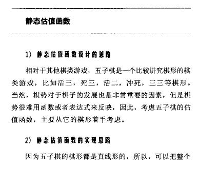
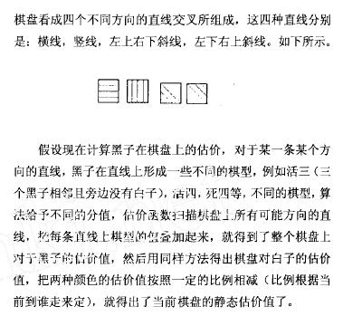
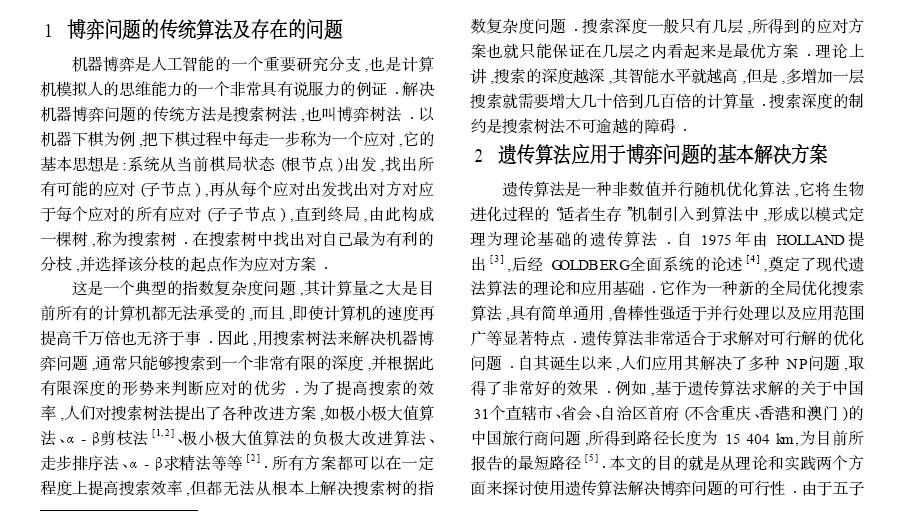
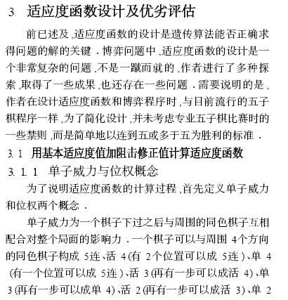
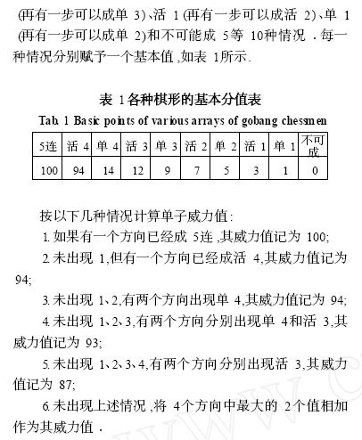
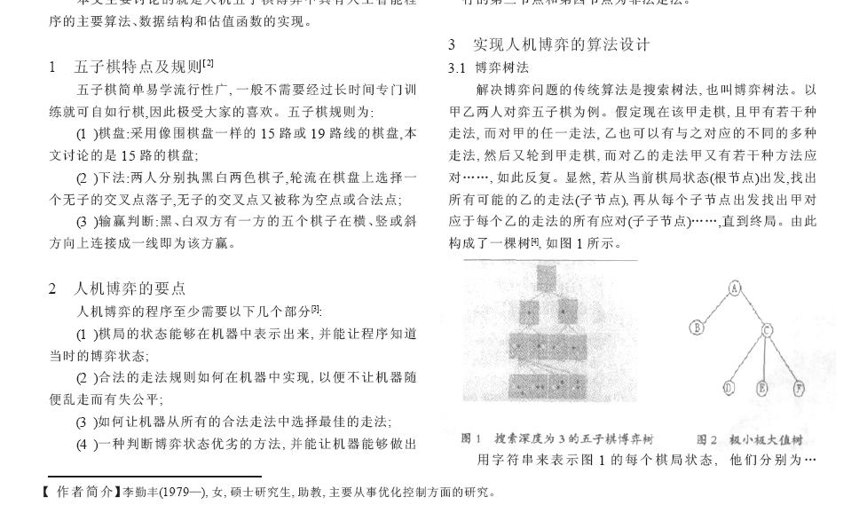
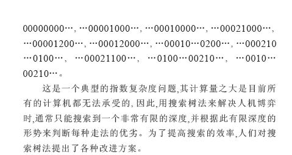
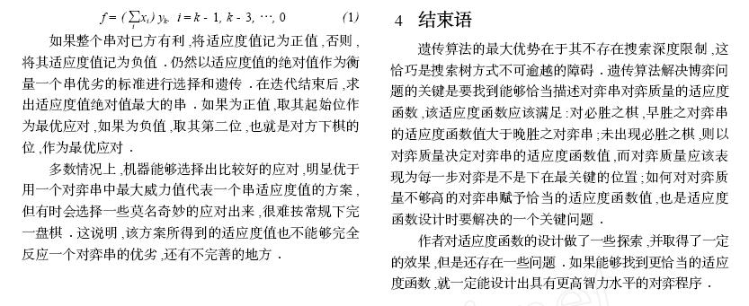

[学术讨论] 计算机时代的五子棋，黑石为什么小儿科？
#1 [学术讨论] 计算机时代的五子棋，黑石为什么小儿科？ 作者：岳麓小棋后 发表时间：2009-4-15 11:25:21


黑石的VALUE值由来？？？

网上五子棋对弈软件的程序算法探讨？？？


这里注意不考虑专业禁规则这条！！！禁手不仅对人脑思维产生冲击，
对五子棋软件的算法设计也产生很大冲击，这牵涉到禁手的数学逻辑建模表达。


注意其计算量之大是目前所有计算机都无法承受的这句。

这里注意比较好的应对，，，，，——————》》黑石认为比较好的应对？？
俗话说的好，“不怕东西不好，就怕比”，是这句俗话不？？
黑石选的点也许能杀掉99%的点，但是却在最后一个点上倒下，这个时候黑石还是会推荐你下的，，，，
所以呢，大家还要虚心学习，黑石就是个下棋的辅助工具，到一定境界，你会发现它很小儿科！！！
最后感谢福州大学图书馆的支持和各篇论文的学者，小棋后“剽窃”了很多！！！
［ 茗弈小刀 于 2009-4-15 12:06:23 时奖励此帖[金币加 20 威望加1］
［ 孤竹 于 2009-4-16 19:39:31 时花20金币送鲜花一朵］
［此帖子已被 茗弈小刀 在 2009-4-22 18:56:26 编辑过］
#2 Re:计算机时代的五子棋，黑石为什么小儿科？ 作者：学生刀 发表时间：2009-4-15 11:33:25
=======上图对应的爱五子棋谱代码如下，以便你拆解：========
h8h9k9g10i7g8g7f7
======================================================
我来给个例子吧 3.7黑 从白必胜变黑必胜 实际上这里是黑必胜 黑石忽略了 2个杀点 不知道怎么搞的
#3 Re:计算机时代的五子棋，黑石为什么小儿科？ 作者：茗弈小刀 发表时间：2009-4-15 12:08:05
好深奥，妹妹喜欢研究这些，感谢妹妹找这么好的资料给大家学习。也谢谢刀学生的举例。#4 Re:计算机时代的五子棋，黑石为什么小儿科？ 作者：wd1988 发表时间：2009-4-15 12:18:15
学生刀，再也不要相信3.7了，3.82就能够准确给出黑必胜，现在对黑石的误解完全来自于对3.7的不信任。当然3.82也不是无敌的
#5 Re:计算机时代的五子棋，黑石为什么小儿科？ 作者：自来水 发表时间：2009-4-15 14:06:52
一般你把Solver和黑石一起用+ 人脑 出错概率就降低很多/#6 Re:计算机时代的五子棋，黑石为什么小儿科？ 作者：学生刀 发表时间：2009-4-15 14:19:11
3.82慢 拆棋可以用3.82 ，3.8的出错概率小 但是有时候会漏黑杀点#7 Re:计算机时代的五子棋，黑石为什么小儿科？ 作者：刀魂 发表时间：2009-4-15 14:30:52
不是不要相信3.7，是你们不太会使用 3.7，要是用得好的话，照样无敌。。。关键是有些点，得靠自己选。。。#8 Re:计算机时代的五子棋，黑石为什么小儿科？ 作者：学生刀 发表时间：2009-4-15 14:33:05
你就是选点太烂了 脱谱后被人轻易执白拿先手 导致大优局被白棋随便飘死 ，选点是和经验有关，你实战过就知道#9 Re:Re:计算机时代的五子棋，黑石为什么小儿科？ 作者：刀魂 发表时间：2009-4-15 14:36:47
引用：
原文由 学生刀 发表于 2009-4-15 14:33:05 :
你就是选点太烂了 脱谱后被人轻易执白拿先手 导致大优局被白棋随便飘死 ，选点是和经验有关，你实战过就知道请不要 轻易说我 选点烂，我要是真选点烂的话，我开残月刀，就砍不了 入侵伊拉克了，两局残月刀，我都胜利，关键点是我自己
的思路，我都说了，刀学生，你不要轻易说别人这样不好，那样不好，你不服我，可以出来砍。。。我随时恭候你
#10 Re:计算机时代的五子棋，黑石为什么小儿科？ 作者：学生刀 发表时间：2009-4-15 14:43:28
残月刀你研究的比鬼都多，你完全就是瞎蒙靠感觉杀了就杀了，没杀就悔棋，悔棋不成拖2分钟再认输，
#11 Re:计算机时代的五子棋，黑石为什么小儿科？ 作者：水晶未来 发表时间：2009-4-15 20:44:07
喜欢开黑石的朋友，我给提点小小的建议：你下棋时先自己算点，算好了在给小黑算你的点好坏，如果你每盘都能这样严格要求。相信你会得到很大的提高：#12 Re:Re:计算机时代的五子棋，黑石为什么小儿科？ 作者：启蒙 发表时间：2009-4-15 21:05:26
引用：
原文由 学生刀 发表于 2009-4-15 14:43:28 :残月刀你研究的比鬼都多，你完全就是瞎蒙靠感觉杀了就杀了，没杀就悔棋，悔棋不成拖2分钟再认输，
一针见血~
#13 Re:计算机时代的五子棋，黑石为什么小儿科？ 作者：顽童 发表时间：2009-4-16 19:34:48
明白棋谱也是人搞出来的 但 如果下棋时对方用软件我觉得是很可恨的事情 棋谱可以作为自己研究探讨时学习.#14 Re:计算机时代的五子棋，黑石为什么小儿科？ 作者：就是爱玩 发表时间：2009-4-16 19:57:35
有点没看懂
#15 Re:计算机时代的五子棋，黑石为什么小儿科？ 作者：无心永恒 发表时间：2009-4-18 7:56:06
没看出来楼主的描述和黑石有什么关系，说了半天通篇都是建立在“无禁”的基础之上的，而黑石好歹还加入了具有了原文中认为“过度复杂”的有禁判断，至于最后下的结论，则是根本不可能从前面论据中得出的对牛弹琴，话可能说得难听了些。但事实上，不是谁去copy几段东西就当自己能写篇好文章的……#16 Re:[学术讨论] 计算机时代的五子棋，黑石为什么小儿科？ 作者：暗夜里的巡航炮 发表时间：2009-11-3 22:05:47
黑石的分数设置不合理
构不成任何形的点不能给分的
#17 Re:[学术讨论] 计算机时代的五子棋，黑石为什么小儿科？ 作者：淡红的秋樱 发表时间：2009-11-3 23:30:23
黑石强的像魔鬼。
#18 Re:[学术讨论] 计算机时代的五子棋，黑石为什么小儿科？ 作者：飞飞 发表时间：2009-11-4 7:59:22
个人多鼓励这样的文章！